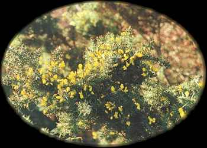

Onn
Furze

Furze, or gorse (Ulex europaeus L.), is a thorny shrub growing to six feet tall. It grows in heaths, moors, pastures, and open woodlands. It produces bright yellow flowers around the time of the spring equinox. It is not often cultivated in North America, but is a serious weed in central California and some other areas. Furze is a member of the Pea family (Fabaceae, or Leguminosae). Curtis Clark